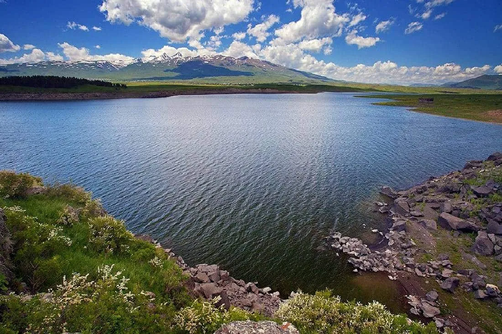
Նկարագիր/Զբոսաշրջություն/Ավանդապատումներ
Քարի լիճը գտնվում է ՀՀ Արագածոտնի մարզում: Այն տեղակայված է Արագածի հարավային լանջին, լեռան գագաթներից ներքև տարածվող հարթավայրում, ծովի մակերևույթից 3207մետր բարձրության վրա: (2) Լճի հայելու մակերեսը կազմում է 0,12 կմ², ամենամեծ խորությունն է՝ 9 մ: Սա Արագածի լանջերին հանդիպող ամենամեծ լիճն է, որը հայտնի է նաև իր քաղցրահամ ջրով:
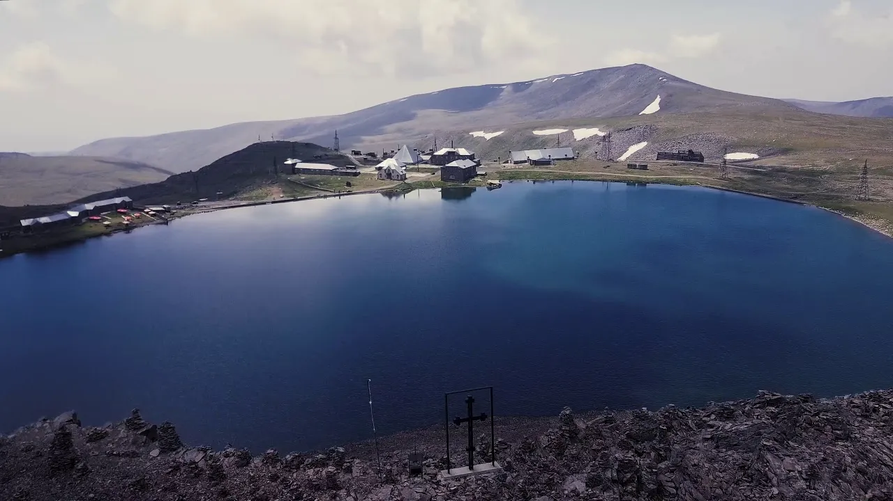
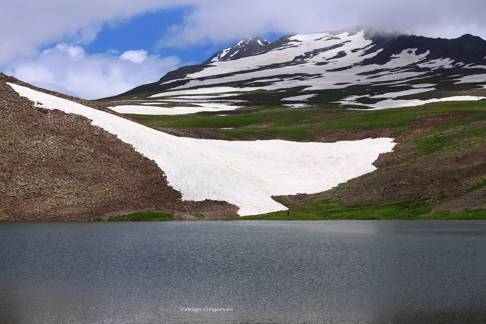
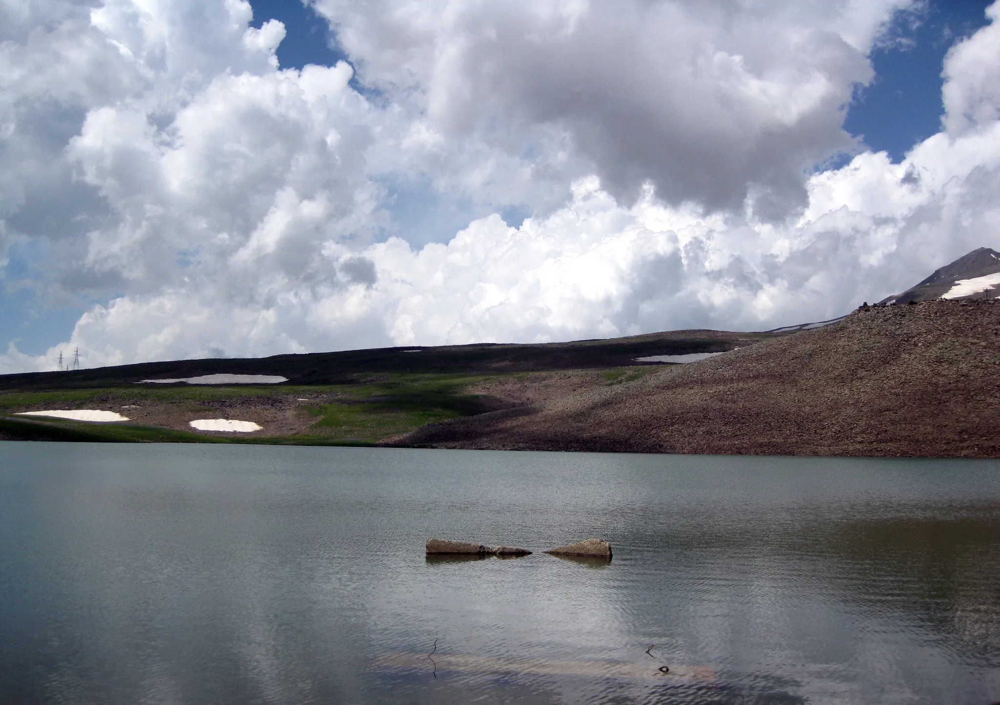
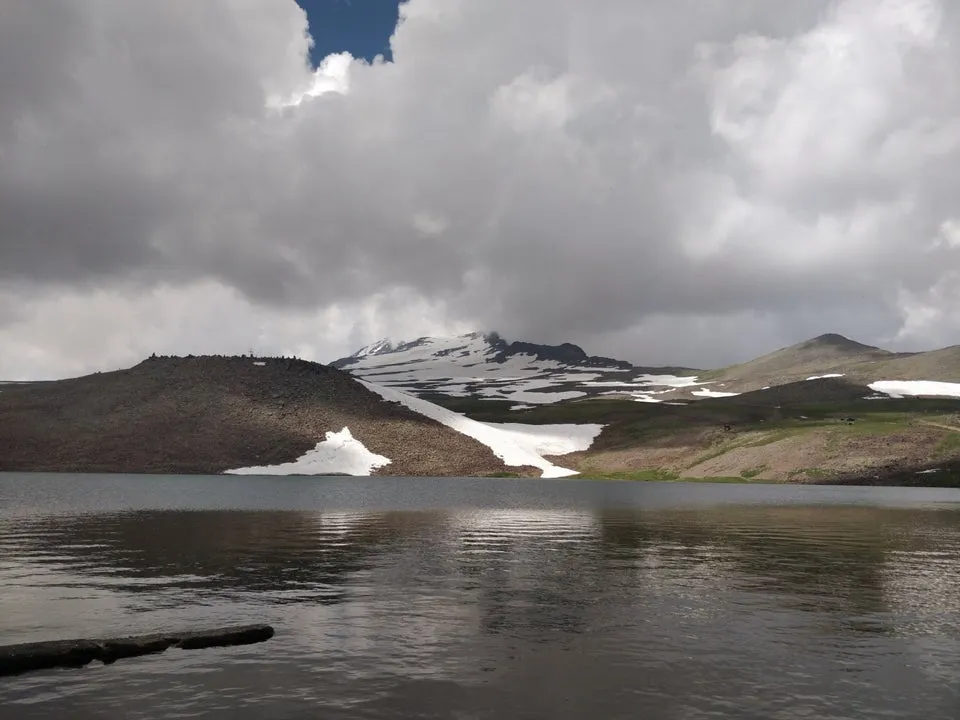
Արագածոտնի մարզի Բյուրական գյուղից դեպի Քարի լիճ գոյություն ունի երթևեկելի ասֆալտապատ ավտոճանապարհ: Այն հասնում է Արկաշենի աղբյուր, որը Ամբերդ գետի ձախ վտակն է և սկիզբ է առնում լճի արևմտյան ափից՝ սնվելով նրա շրջակայքի աղբյուրներից ու ձնհալքային ջրերից: Արագածի երկնագույն գեղեցկուհու 3200 մետր բարձրությունից էլ սկսվում է լեռան հարավային գագաթի երթուղին:
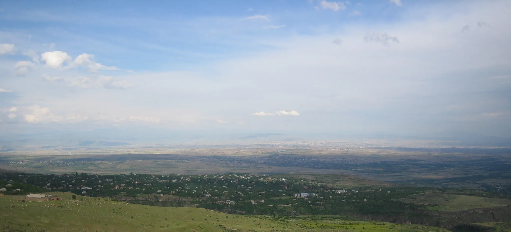
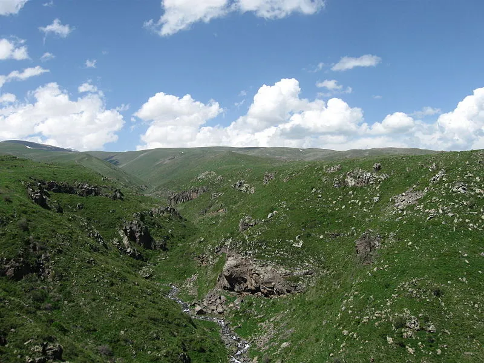

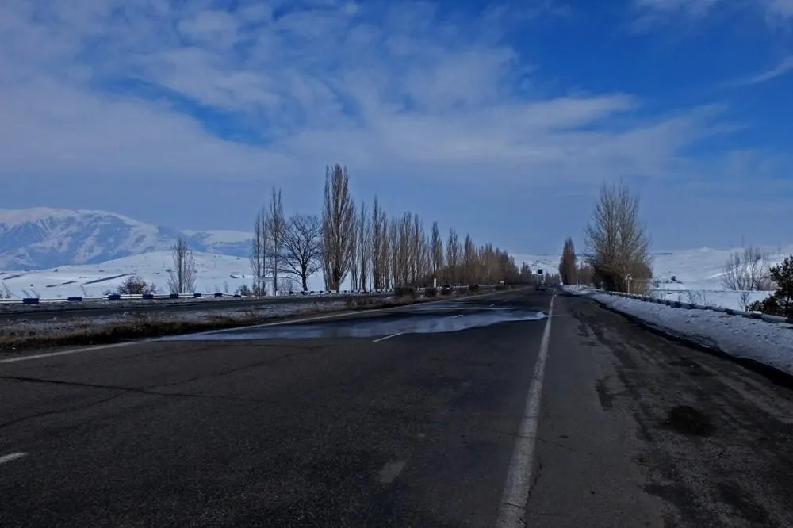
Քարի լիճ կարելի է ուղևորվել անձնական մեքենայով: Հնարավոր է նաև օգտվել տուրիստական գործակալությունների ծառայություններից, որոնք առաջարկում են կանոնավոր տուրեր դեպի Արագածի այս եզակի բնական տեսարժան վայրը: Սակայն տվյալ ուղղության տուրերի սեզոնայնությունը կախված է եղանակային և ճանապարհատրանսպորտային պայմաններից, որոնք ոչ միշտ են բարենպաստ, քանզի տեղանքը բարձրլեռնային է: Գետի ձևավորած անդնդախոր կիրճի բարձունքին՝ 2300 մետր ծովի մակերևույթից բարձր, Արագած լեռան հարավային լանջին, Արկաշեն և Ամբերդ գետերը միավորվում են, և այդ միացման տեղում, եռանկյունաձև հրվանդանին տեղադրված է միջնադարյան նշանավոր Ամբերդ ամրոցն ու բերդաքաղաքի Վահրամաշեն եկեղեցին (Բյուրականից 7 կմ հյուսիս): Այդպիսով, դեպի լիճ տանող ամբողջ ճանապարհն անցնում է հայոց բնության հրաշագեղ վայրերով, որի վրա իր դրոշմն է դրել նաև հայ ճարտարապետի փայլուն հանճարը:
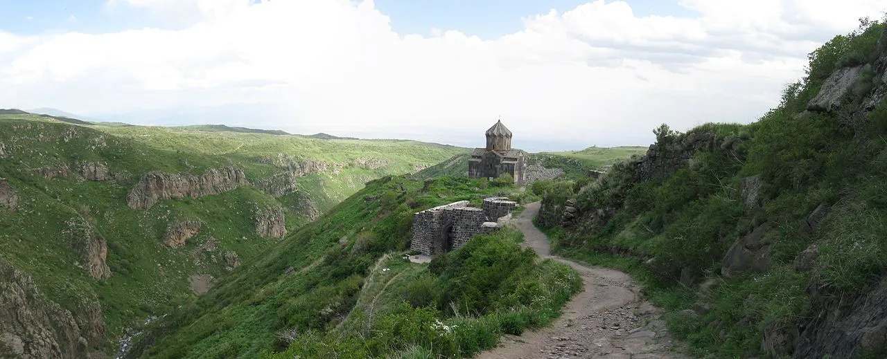
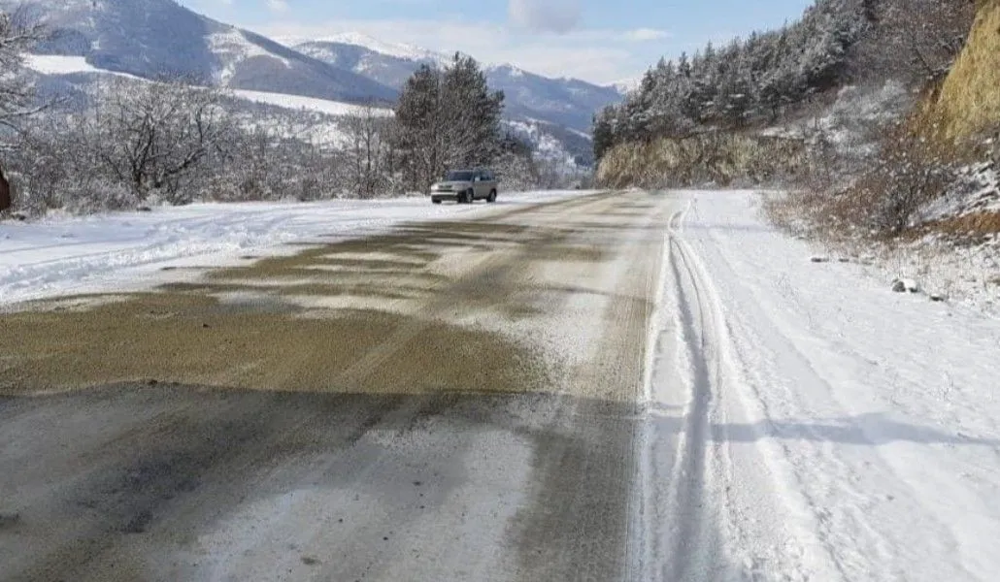
Բարձրլեռնային այս բնական ջրային ավազանը կազմավորվել է Արագած լեռան սառցե գոյացություններից, հետևաբար ունի սառցաբեկորային ծագում: Հենց այդ է պատճառը, որ տարվա ընթացքում լիճը տևականորեն շրջապատված է լինում ձյան հաստ շերտերով, ինչն էլ բացատրում է նրա ջրի բացառիկ սառնությունը շուրջբոլոր տարի: Այստեղ միջին տարեկան ջերմաստիճանը տատանվում է -3°C - +10°C-ի սահմաններում, տեղումները՝ 300-900 մմ և ավելի:Լեռան լանջերին ամռանը չափավոր տաք է, ձմռանը՝ ցուրտ: Քարի լիճ կարելի է ուղևորվել անձնական մեքենայով: Հնարավոր է նաև օգտվել տուրիստական գործակալությունների ծառայություններից, որոնք առաջարկում են կանոնավոր տուրեր դեպի Արագածի այս եզակի բնական տեսարժան վայրը: Սակայն տվյալ ուղղության տուրերի սեզոնայնությունը կախված է եղանակային ճանապարհատրանսպորտային պայմաններից, որոնք ոչ միշտ են բարենպաստ, քանզի տեղանքը բարձրլեռնային է:
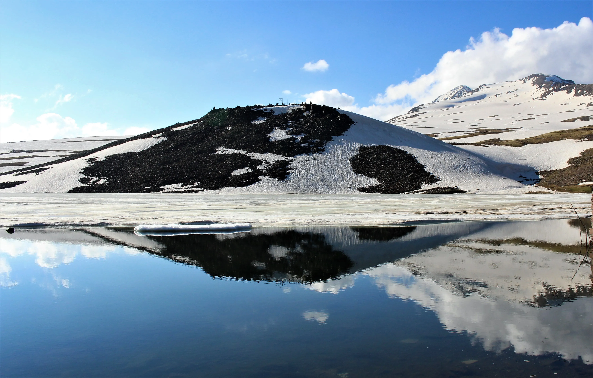

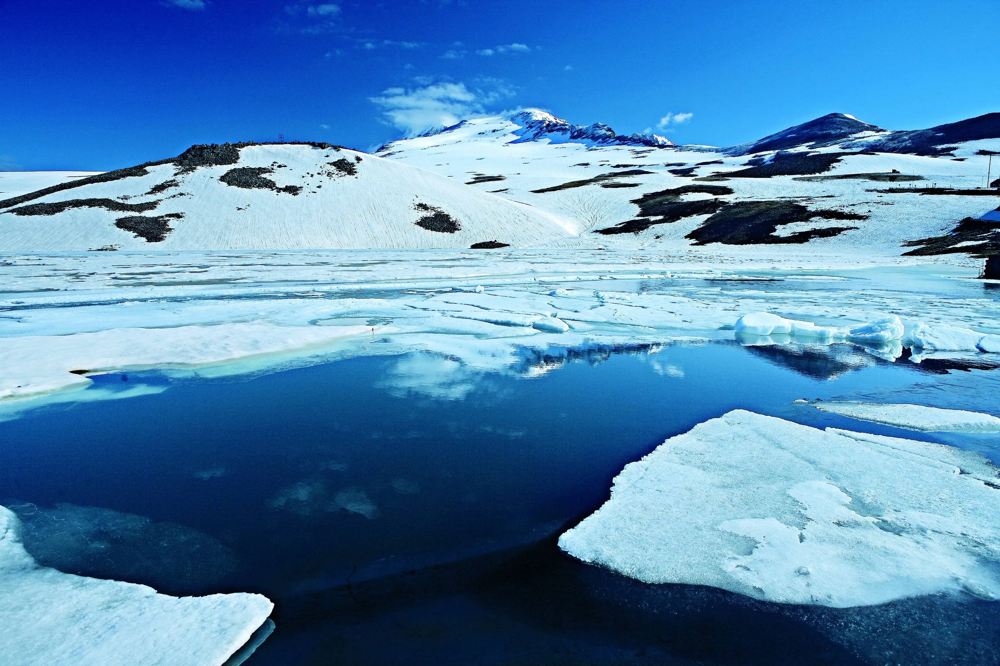
Զբոսաշրջություն
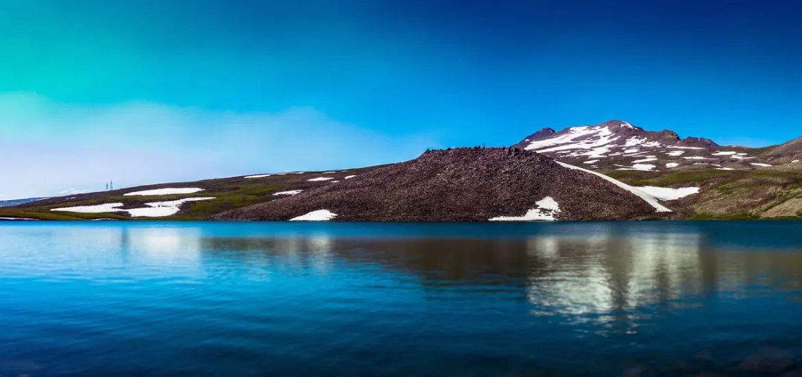
Քարի լիճը Հայաստանի գլխավոր և ամենագեղատեսիլ տուրիստական ուղղություններից է, ուր մարդիկ մեկնում են, ասես, աշխարհից կտրվելու ու բնության մի հեռավոր, գողտրիկ անկյունում խաղաղություն գտնելու, լեռնային սառն ու մաքուր օդը լիաթոք վայելելու, նաև եզակի լուսանկարներ անելու համար։ Այս բացառիկ լեռնային լիճն ունի յուրահատուկ ձգողականություն և հմայք: Շրջապատված լինելով անթիվ, անհամար բազմերանգ ծաղիկների ալպյան ճոխ մարգագետիներով, ներկայացնում է կատարյալ գեղեցկության մի լեռնային բնապատկեր:
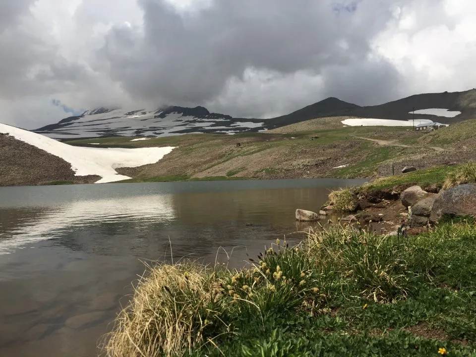
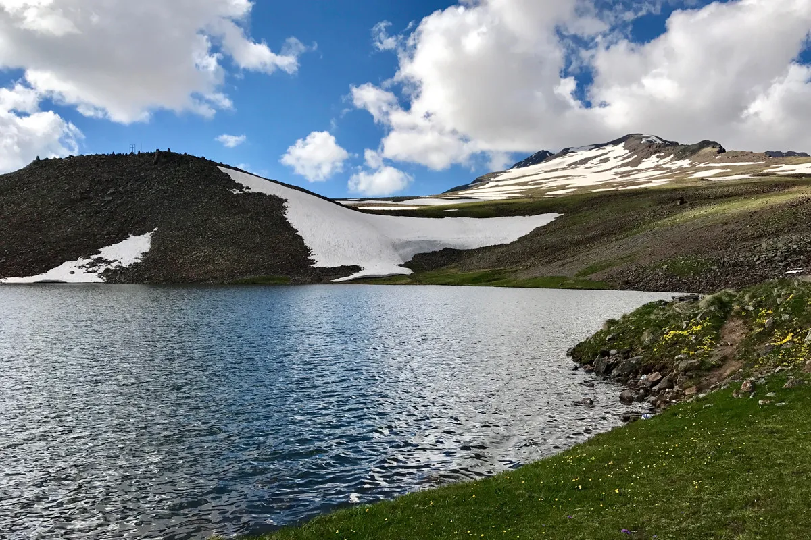
Լճին առանձնահատուկ պերճանք ու փայլ են հաղորդում լեռնային ձյունաճերմակ գագաթի մերձակցությունն ու հեքիաթային պատկերը:

Երեք կողմից լեռների լանջերով պատած լճի տեսանելի տարածությունը մի կողմից է միայն, որտեղից էլ բացվում է մեկ այլ սքանչելի տեսարան՝ դեպի Արարատ լեռն ու Արարատյան դաշտավայրը:
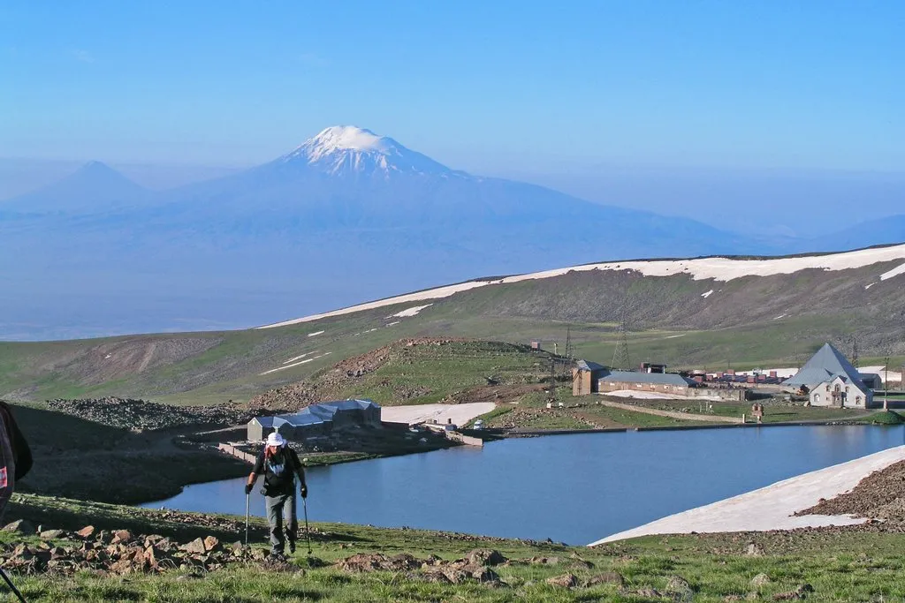
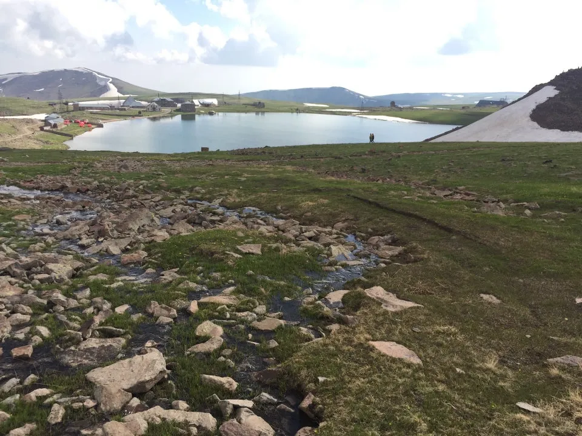
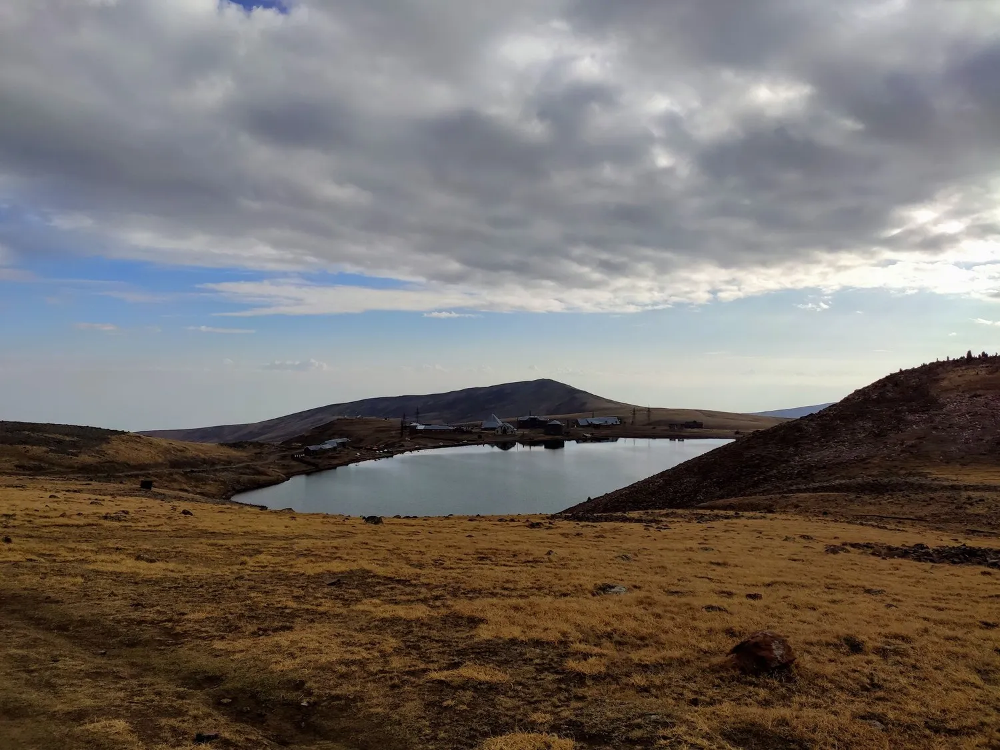
Տեղանքը հարուստ է բուսական ու կենդանական աշխարհի ամենատարբեր ներկայացուցիչներով: Զարմանալի է, որ այս սառցապատ լճում ապրում է նաև իշխան ձկնատեսակը, որի քանակը արհեստական ձկնաբուծությամբ տարեցտարի համալրվում է մանրաձկով:
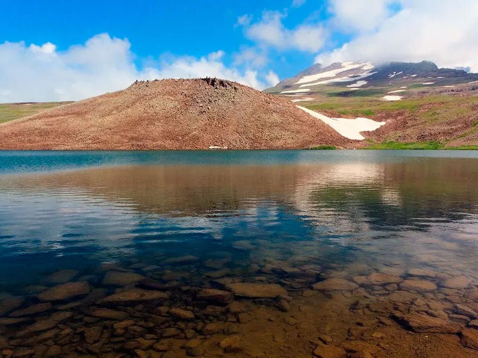
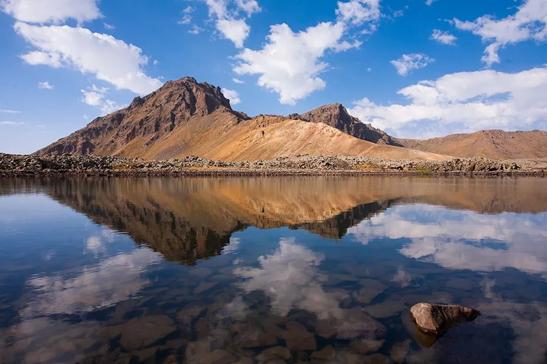
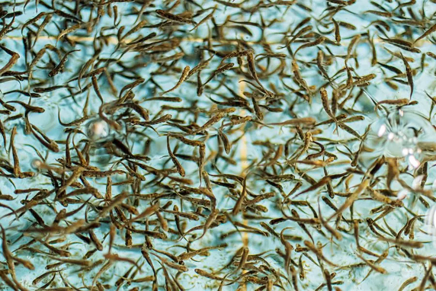
Լճի մերձակայքում պահպանվել է մի հայտնի վիշապաքար, որը հնագույն մեգալիթյան հուշարձան է, և, հավանաբար, հենց այն քարն է, որի առիթով էլ լիճն անվանակոչվել է Քարի, իսկ ափերին պահպանվել են մեգալիթյան հուշարձանների մնացորդներ:
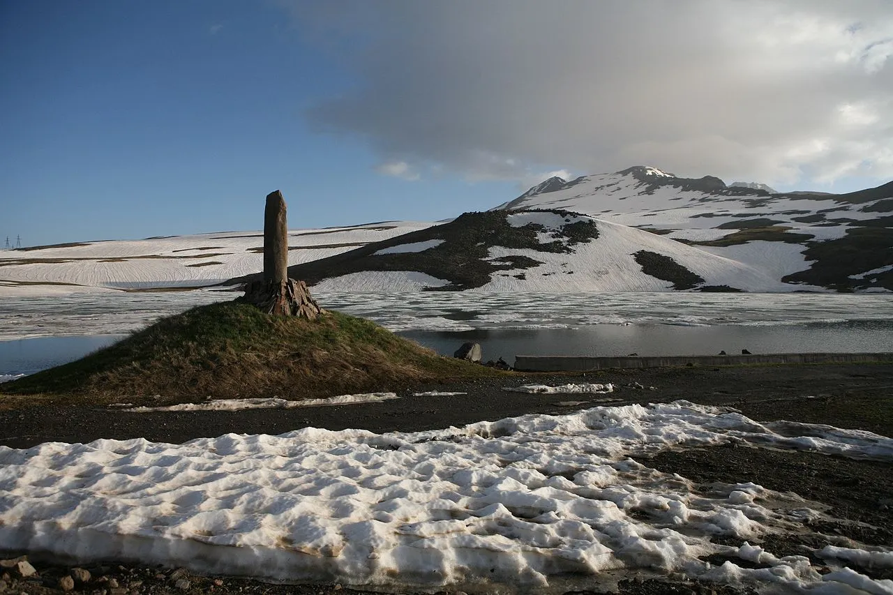


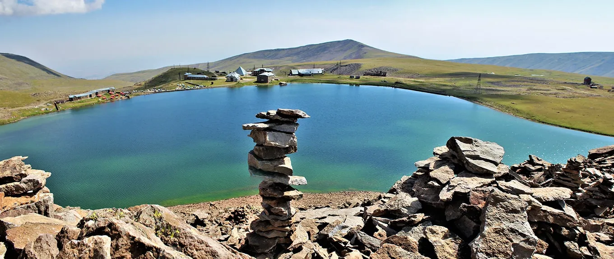
Լճի արևելյան ափին տեղակայված է օդերևութաբանական կայանը: Իսկ հարավային ափին Երևանի ֆիզիկայի ինստիտուտի առաջնային տիեզերական ճառագայթների գրանցման և հետազոտման կայանն է, որը 1942 թվականին հիմնադրել են Արտեմ և Աբրահամ Ալիխանյանները:
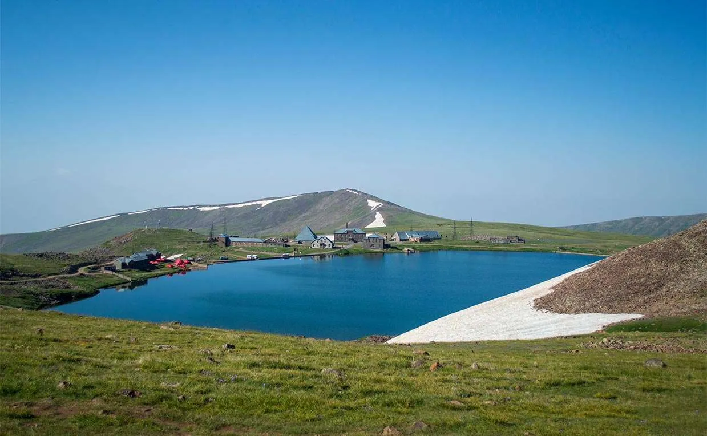
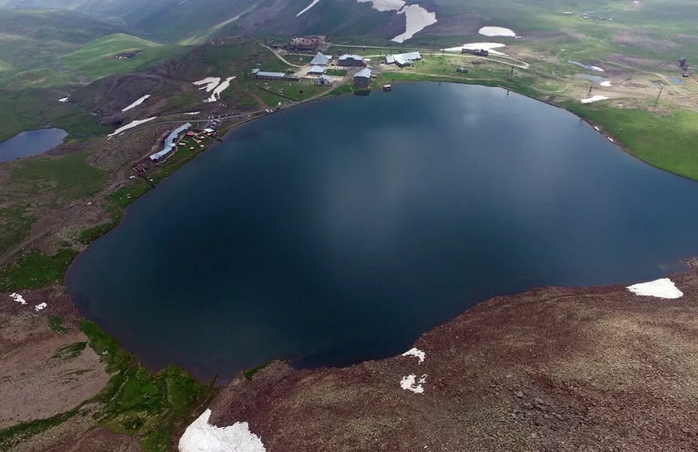
Կայանի ջրամատակարարումը կատարվում է անմիջապես Քարի լճից, հետևաբար ջրի հոսքը կանգնեցնելու նպատակով նրա հարավային ափը փակվել է բետոնե պատնեշով, ինչի շնորհիվ ջրի մակարդակը բարձրացել է, ուստի ձմռանը լիճն այլևս չի սառցակալում մինչև հատակը, իսկ գարնան ամիսներին ամբարված ջուրը ամբողջ տարի բավարարում է կայանի բոլոր կարիքները:

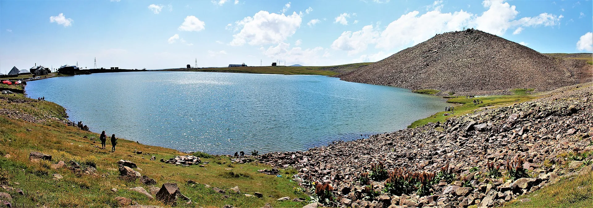
Լճի շրջակայքում գործում է հանգստի գոտի:

Ավանդապատումներ
Քարի լճի մասին մի ավանդազրույց կա, որը միանգամայն յուրովի է մեկնաբանում նրա ծագումը: Հին ժամանակներում գյուղի աղջիկները ջուր էին բերում Արագածի փեշերից հոսող աղբյուրներից: Ամեն առավոտ կուժ ու կուլան շալակներին երգով ու ծիծաղով բարձրանում էին լեռն ի վեր: Հայոց աշխարհի գեղջկուհիները այնքան մաքրամուր էին, որքան Արագածի զուլալ ջրերը: Սակայն անգութ ու դաժան թշնամին, որ ամենուրեք էր ու միշտ հետևում էր նրանց, օրերից մի օր իր շնաբարո ոհմակով հանկարծակի հարձակվում է գեղանի կույսերի վրա հենց այն պահին, երբ աղջիկներն արդեն կժները լցրած իջնում էին լեռան լանջից: Ու սկսվում է ահասարսուռ մի սպանդ: Ջրով լի կժերը ցած են ընկնում կույսերի ձեռքից, և նրանցից հազարավոր աղբյուրներ են բխում ու լցվելով լեռան գագաթին մի ապահով տեղ, լիճ են գոյացնում, լիճ, որը նույն պահից էլ քար է կտրում իր տեսածից: Հենց այս դաժան ու տխուր դեպքերից էլ ծագել է Քարի լիճը, որպես կենդանի վկա բարբարոս հրոսակների վայրագությունների: Իսկ խեղճ կույսերը մեռնելուց առաջ իրենց ողջ հմայքն ու գեղեցկությունը փոխանցել էին լճին, որպես հիշատակ, որպեսզի գոնե մի տեղ, կուսական բնության մեջ հավետ պահպանվեր այն պարզ ու վճիտ գեղեցկությունը, որ անհագ ատելությամբ պղծել ու ոչնչացրել էր թշնամին: Այսօր լեռնային այս լիճը նույնքան գեղատեսիլ է, որքան հայոց գեղուհիները, որ կժերը շալակներին սար էին բարձրանում ջուր բերելու ու ենթարկվեցին անսպասելի հարձակման, երբ օձն անգամ չի հարձակվում ջուր խմող մարդու վրա: Ու այդպես քար կտրած, որպես բնական մի հուշարձան, բոլոր այցելուներին մշտապես հիշեցնում է այն մասին, ինչ մասին երբեք չի կարելի մոռանալ:
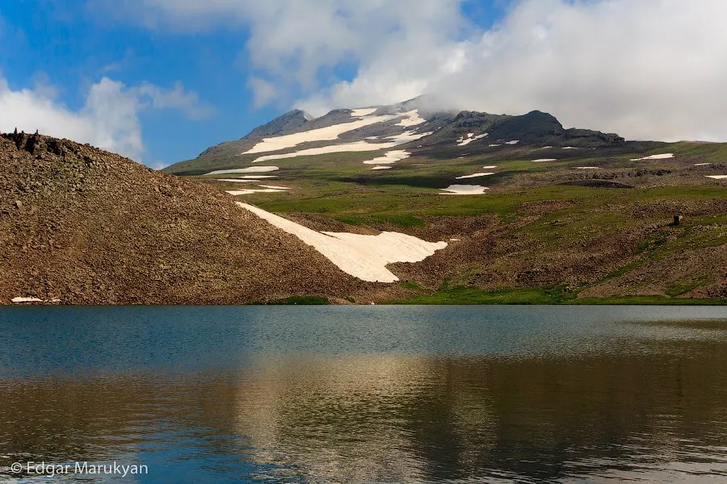